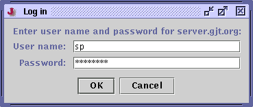

jEdit has its own FTP protocol implementation which is superior to the one that ships with Java. Unlike the default implementation, it supports non-anonymous logins and lets you browse remote filesystems.
To open a file stored on an FTP server, select the Connect to FTP Server command from the More menu in the VFS browser. You will be prompted for a host name, user name and password.
Figure 8-2. The FTP login dialog box

If a buffer was loaded from an FTP server, File>Save (keyboard equivalent: Control-S) will automatically upload it. To upload a buffer not originally from an FTP server, invoke File>Save As and repeat the above steps to connect to a server.
Some jEdit features do not work when editing remote files; no autosave or backup files are created, and the File>Current Directory menu does not list remote directories.
To improve performance, jEdit caches directory listings from remote FTP servers. Adding and deleting files from within jEdit will automatically update the cache when necessary, but if you also use another FTP client, file listings may become out of date. Double-clicking or typing a URL in the VFS browser will consult the cache first; the Reload button will force a reload. To clear all cached listings, invoke Clear Remote Directory Cache from either the VFS browser's More menu, or jEdit's Utilities menu.
jEdit also remembers passwords on remote servers until it is closed. To force jEdit to forget saved passwords without quitting and restarting it, invoke Forget Remote Passwords from either the VFS browser's More menu, or jEdit's Utilities menu.
If you are connected to the Internet from behind a firewall that blocks incoming connections, you may need to enable passive-mode FTP in the General pane of the Utilities>Global Options dialog box.